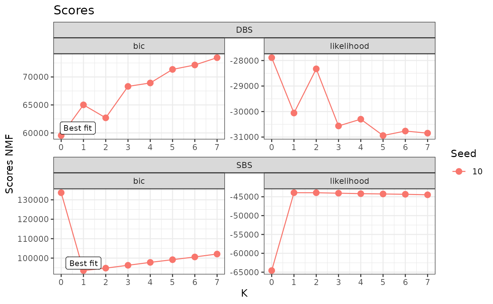
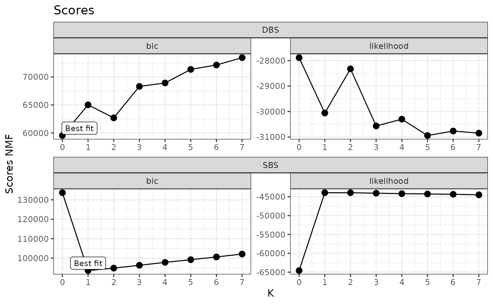

Inference
Inference.Rmd
knitr::opts_chunk$set(warning = FALSE, message = FALSE)
library(bascule)
reticulate::install_python(version="3.9.16")
#> Installing pyenv ...
#> Done! pyenv has been installed to '/home/runner/.local/share/r-reticulate/pyenv/bin/pyenv'.
#> [1] "/home/runner/.pyenv/versions/3.9.16/bin/python3.9"
reticulate::py_install(packages="pybascule",
pip=TRUE,
python_version="3.9.16")
#> Using Python: /home/runner/.pyenv/versions/3.9.16/bin/python3.9
#> Creating virtual environment '~/.virtualenvs/r-reticulate' ...
#> Done!
#> Installing packages: pip, wheel, setuptools
#> Virtual environment '~/.virtualenvs/r-reticulate' successfully created.
#> Using virtual environment '~/.virtualenvs/r-reticulate' ...
py = reticulate::import("pybascule")We can load the data example_dataeset, a bascule object
containing the true signatures and exposures used to generate the
mutation counts matrix. In the object, data for SBS and DBS is
reported.
data(example_dataset)We can extract the mutation count matrix from the object using the
get_input function. With reconstructed=FALSE
we are obtaining the observed counts, and not the reconstructed ones
computed as the matrix multiplication of exposures and signatures.
counts = get_input(example_dataset, matrix=T, reconstructed=F)
head(counts[["SBS"]])
#> A[C>A]A A[C>A]C A[C>A]G A[C>A]T A[C>G]A A[C>G]C A[C>G]G A[C>G]T A[C>T]A
#> G1_1 118 7 0 52 10 2 1 5 27
#> G1_2 236 21 5 107 17 12 3 14 67
#> G1_3 132 8 1 50 11 5 1 7 42
#> G1_4 116 15 3 40 10 6 0 12 40
#> G1_5 149 12 3 56 10 3 2 14 49
#> G1_6 161 10 2 66 13 8 4 13 62
#> A[C>T]C A[C>T]G A[C>T]T A[T>A]A A[T>A]C A[T>A]G A[T>A]T A[T>C]A A[T>C]C
#> G1_1 10 150 17 5 1 5 3 30 11
#> G1_2 35 253 27 17 23 15 8 85 14
#> G1_3 19 328 17 3 8 9 6 38 14
#> G1_4 26 147 14 8 6 13 9 35 10
#> G1_5 16 319 23 9 4 5 3 67 12
#> G1_6 25 414 27 7 7 9 6 47 14
#> A[T>C]G A[T>C]T A[T>G]A A[T>G]C A[T>G]G A[T>G]T C[C>A]A C[C>A]C C[C>A]G
#> G1_1 33 32 5 2 3 1 144 2 2
#> G1_2 50 55 9 4 20 5 348 9 3
#> G1_3 30 23 0 2 10 3 210 5 4
#> G1_4 43 37 4 3 5 3 145 4 4
#> G1_5 40 33 2 3 9 4 168 8 4
#> G1_6 39 42 5 3 8 7 213 4 1
#> C[C>A]T C[C>G]A C[C>G]C C[C>G]G C[C>G]T C[C>T]A C[C>T]C C[C>T]G C[C>T]T
#> G1_1 73 5 10 0 6 12 14 76 22
#> G1_2 172 14 11 1 15 33 30 153 45
#> G1_3 115 7 10 5 5 15 19 182 18
#> G1_4 94 6 6 4 6 21 14 101 14
#> G1_5 82 8 12 2 12 19 21 217 21
#> G1_6 103 12 6 3 8 16 20 208 26
#> C[T>A]A C[T>A]C C[T>A]G C[T>A]T C[T>C]A C[T>C]C C[T>C]G C[T>C]T C[T>G]A
#> G1_1 6 4 4 6 6 8 17 6 3
#> G1_2 5 7 15 3 34 17 34 23 7
#> G1_3 2 5 4 2 12 11 13 14 1
#> G1_4 1 4 5 5 6 4 14 15 1
#> G1_5 4 5 5 4 13 10 13 18 2
#> G1_6 3 10 5 3 16 10 21 16 3
#> C[T>G]C C[T>G]G C[T>G]T G[C>A]A G[C>A]C G[C>A]G G[C>A]T G[C>G]A G[C>G]C
#> G1_1 0 3 5 230 3 1 129 2 3
#> G1_2 6 12 10 514 8 3 282 9 6
#> G1_3 4 5 4 267 9 2 172 4 6
#> G1_4 3 3 6 235 10 1 125 4 4
#> G1_5 3 4 11 254 12 5 128 9 6
#> G1_6 6 6 14 332 10 1 220 8 5
#> G[C>G]G G[C>G]T G[C>T]A G[C>T]C G[C>T]G G[C>T]T G[T>A]A G[T>A]C G[T>A]G
#> G1_1 0 3 18 16 77 14 0 3 3
#> G1_2 1 7 30 35 159 29 3 4 8
#> G1_3 0 5 16 17 198 18 5 5 7
#> G1_4 1 5 14 22 114 21 0 2 3
#> G1_5 2 6 22 16 203 21 4 3 4
#> G1_6 2 7 18 18 228 23 8 3 3
#> G[T>A]T G[T>C]A G[T>C]C G[T>C]G G[T>C]T G[T>G]A G[T>G]C G[T>G]G G[T>G]T
#> G1_1 1 9 6 18 9 3 0 7 3
#> G1_2 6 21 14 28 22 2 3 8 2
#> G1_3 3 10 3 12 12 2 0 4 0
#> G1_4 0 6 13 11 8 1 1 5 4
#> G1_5 4 21 5 19 15 3 0 5 6
#> G1_6 3 17 2 13 21 2 0 2 2
#> T[C>A]A T[C>A]C T[C>A]G T[C>A]T T[C>G]A T[C>G]C T[C>G]G T[C>G]T T[C>T]A
#> G1_1 187 86 3 245 4 6 1 10 13
#> G1_2 324 210 2 576 14 14 2 22 35
#> G1_3 195 129 6 343 7 6 0 13 20
#> G1_4 159 102 2 277 5 0 1 13 14
#> G1_5 183 117 0 284 8 6 2 19 27
#> G1_6 243 151 3 366 4 10 2 6 25
#> T[C>T]C T[C>T]G T[C>T]T T[T>A]A T[T>A]C T[T>A]G T[T>A]T T[T>C]A T[T>C]C
#> G1_1 13 56 16 6 1 3 6 6 8
#> G1_2 34 105 32 11 3 5 14 21 12
#> G1_3 19 97 18 6 5 1 10 16 9
#> G1_4 23 69 19 7 2 4 7 15 4
#> G1_5 14 111 23 2 5 7 21 24 11
#> G1_6 19 138 25 5 5 4 16 22 9
#> T[T>C]G T[T>C]T T[T>G]A T[T>G]C T[T>G]G T[T>G]T
#> G1_1 7 16 3 3 6 7
#> G1_2 19 37 5 10 11 25
#> G1_3 15 25 7 9 7 21
#> G1_4 7 22 5 5 5 17
#> G1_5 7 16 9 9 4 13
#> G1_6 8 23 1 6 7 9
head(counts[["DBS"]])
#> AC>CA AC>CG AC>CT AC>GA AC>GG AC>GT AC>TA AC>TG AC>TT AT>CA AT>CC AT>CG
#> G1_1 5 1 4 8 4 12 5 0 6 13 6 11
#> G1_2 4 1 6 4 3 17 0 1 3 16 13 18
#> G1_3 5 0 4 6 1 13 1 0 2 18 9 14
#> G1_4 2 0 0 2 0 4 1 1 2 3 2 2
#> G1_5 4 0 4 3 0 6 0 1 2 8 2 5
#> G1_6 0 0 3 1 0 5 0 1 1 1 1 1
#> AT>GA AT>GC AT>TA CC>AA CC>AG CC>AT CC>GA CC>GG CC>GT CC>TA CC>TG CC>TT
#> G1_1 9 9 4 13 12 34 0 0 45 60 33 200
#> G1_2 11 7 4 7 8 23 2 3 46 57 27 197
#> G1_3 6 3 3 4 11 29 0 1 56 55 18 273
#> G1_4 4 2 0 0 5 7 0 0 15 17 9 70
#> G1_5 2 4 1 3 5 8 0 1 9 16 3 64
#> G1_6 3 5 3 1 5 10 0 0 13 16 7 50
#> CG>AT CG>GC CG>GT CG>TA CG>TC CG>TT CT>AA CT>AC CT>AG CT>GA CT>GC CT>GG
#> G1_1 0 0 7 93 1 2 274 165 113 16 10 2
#> G1_2 0 1 2 87 1 11 178 107 100 12 3 3
#> G1_3 2 0 2 73 0 3 161 103 107 12 5 2
#> G1_4 2 0 2 26 1 0 88 59 43 6 5 2
#> G1_5 1 0 1 40 1 3 109 48 41 5 3 0
#> G1_6 1 0 2 17 1 2 66 36 38 5 2 0
#> CT>TA CT>TC CT>TG GC>AA GC>AG GC>AT GC>CA GC>CG GC>TA TA>AT TA>CG TA>CT
#> G1_1 24 11 55 0 2 21 7 6 7 4 4 4
#> G1_2 29 8 43 0 3 19 0 1 3 3 4 4
#> G1_3 33 7 26 4 5 23 4 2 3 1 1 7
#> G1_4 8 0 10 0 1 12 1 1 1 1 0 0
#> G1_5 11 1 10 0 1 7 4 2 0 3 0 1
#> G1_6 4 1 9 1 3 4 0 1 1 2 1 2
#> TA>GC TA>GG TA>GT TC>AA TC>AG TC>AT TC>CA TC>CG TC>CT TC>GA TC>GG TC>GT
#> G1_1 0 5 5 21 36 61 50 1 36 67 6 52
#> G1_2 1 8 2 20 34 49 56 2 28 64 5 53
#> G1_3 2 3 4 14 42 58 44 3 31 65 5 40
#> G1_4 1 1 0 12 12 20 12 0 10 19 2 13
#> G1_5 1 0 2 12 8 20 26 0 8 34 0 22
#> G1_6 2 0 1 11 8 17 26 0 13 28 1 18
#> TG>AA TG>AC TG>AT TG>CA TG>CC TG>CT TG>GA TG>GC TG>GT TT>AA TT>AC TT>AG
#> G1_1 23 0 22 46 4 4 7 10 62 7 4 25
#> G1_2 13 1 15 51 2 10 5 2 45 4 2 17
#> G1_3 15 1 10 69 2 2 9 2 41 5 5 23
#> G1_4 6 1 7 15 2 0 3 2 23 3 1 8
#> G1_5 4 0 7 15 1 5 2 2 18 4 2 5
#> G1_6 7 0 8 15 0 1 1 2 12 2 0 3
#> TT>CA TT>CC TT>CG TT>GA TT>GC TT>GG
#> G1_1 2 14 23 11 68 165
#> G1_2 3 8 17 8 66 161
#> G1_3 0 4 22 9 50 120
#> G1_4 0 3 12 4 23 38
#> G1_5 0 7 5 3 19 55
#> G1_6 0 4 13 4 13 64We use as reference the COSMIC catalogue for SBS and DBS.
reference_cat = list("SBS"=COSMIC_sbs_filt, "DBS"=COSMIC_dbs)In the example dataset, the true number of signatures is five for both SBS and DBS, thus we can provide as list of K to test values from 0 to 7.
K_list = 0:7Now, we can fit the model. Let’s first fit the NMF to perform signatures deconvolution.
x = fit(counts=counts, k_list=K_list, n_steps=3000,
reference_cat=reference_cat,
keep_sigs=c("SBS1","SBS5"), # force fixed signatures
store_fits=TRUE, py=py)
x
#> A[C>A]A A[C>A]C A[C>A]G A[C>A]T A[C>G]A
#> SBS1 0.000000000 0.000000000 0.000000000 0.000000000 0.000000000
#> SBS5 0.011997600 0.009438112 0.001849630 0.006608678 0.010097980
#> SBS7c 0.004830406 0.001150097 0.000377032 0.001960165 0.001120094
#> SBS18 0.051533859 0.015810387 0.002431598 0.021414070 0.001731137
#> SBS31 0.009534985 0.018490274 0.001659127 0.006276698 0.008315626
#> SBS36 0.025193777 0.008317945 0.002239447 0.017895580 0.001839546
#> A[C>A]A A[C>A]C A[C>A]G A[C>A]T A[C>G]A
#> SBSD1 0.004289788 0.002116789 0.000976705 0.002383478 0.004421008
#> AC>CA AC>CG AC>CT AC>GA AC>GG
#> DBS1 0.000049700 0.000026400 0.004291091 0.000127032 5.710000e-05
#> DBS3 0.006347323 0.000046500 0.003018727 0.005847534 4.498100e-04
#> DBS5 0.002139822 0.000461962 0.002019832 0.000557954 1.110000e-17
#> DBS6 0.002660571 0.000146031 0.000240052 0.008581841 1.040220e-04
#> DBS11 0.001369907 0.000193987 0.000755948 0.000441970 2.249847e-03
#> NULLYou can inspect the model selection procedure.
plot_scores(x)
You can visualize the inferred signatures. Here, we notice that from 41 and 20 SBS and DBS signatures, the model only selects 6 and 5 signatures from the catalogue. Moreover, it also infers a denovo signature from the SBS counts.

We can notice from the signatures plots a clear similarity
x_refined = refine_denovo_signatures(x)
x_refined_cluster = fit_clustering(x_refined, cluster=3)